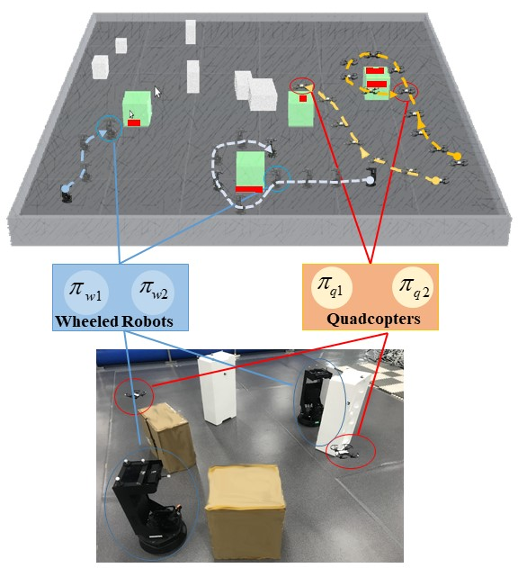
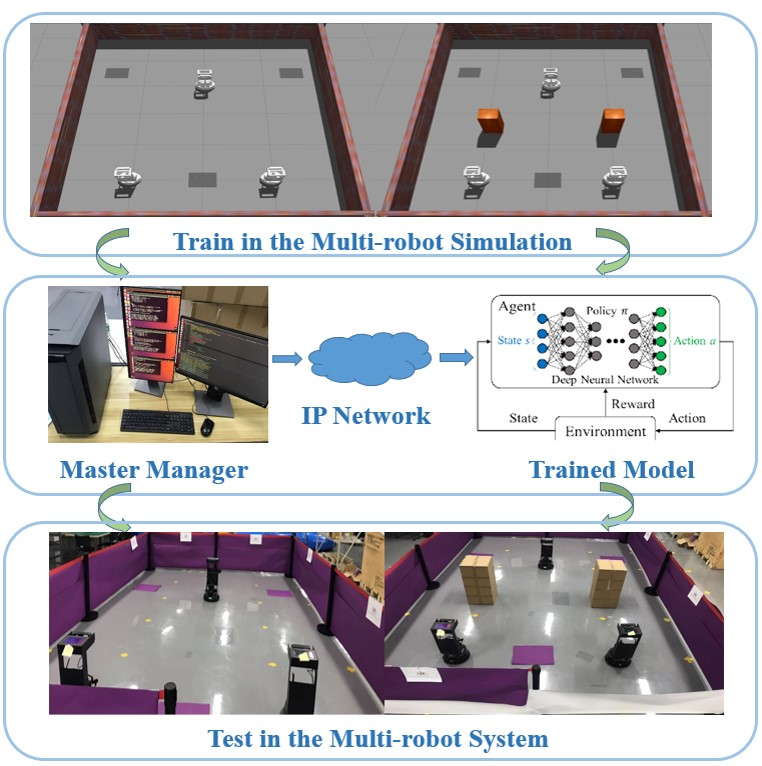

I'm working as a researcher assistant in Shenzhen Institute of Artificial Intelligence and Robotics for Society. I'm mainly doing research on cooperative decision-making and planning by deep Reinforcement Learning for heterogeneous robots in the simulation and real world.
I mainly foucs on robot learning in the field of robotics. My main research interests include decison-making, planning in multi-robot systems by learning and optimization algorithms(eg: reinforcment learning, meta learning, representaition learning, etc) and sim2real technology(eg: domain randomization, domain adaptation, transfer learning, etc).
I'm looking for a Phd position and want to pursue in the field of robotics.
[CV]
[Google Scholar]
[ResearchGate]
principal performer, 05/2020-present
Advisor: LAM Tin Lun, Assistant Professor, Chinese University of Hong Kong-Shen Zhen Shenzhen, China
project manager and principal performer (led four graduates), 09/2017-01/2019.
Advisor: Yaoming Zhou, Associate Professor, School of Aeronautic Science and Engineering of BUAA Beijing, China
Independent researcher, 10/2016-06/2018.
Advisor: Yaoming Zhou, School of Aeronautic Science and Engineering of BUAA Beijing and Dongguan, China
project manager and principal performer (led three graduates), 07/2017-06/2018.
Advisor: Hu Liu, Professor, School of Aeronautic Science and Engineering of BUAA Beijing and Zhuhai, China
project manager (led three graduate students and one undergraduate), 05/2017-06/2019.
Advisor: Hu Liu, Professor, School of Aeronautic Science and Engineering of BUAA Beijing and Shenyang, China
Independent researcher, 04/2017-06/2017.
Advisor: Yaoming Zhou, School of Aeronautic Science and Engineering of BUAA Beijing and Dongguan, China
project participant, 02/2017-06/2017.
Advisor: Zhijun Meng, Associate Professor, School of Aeronautic Science and Engineering of BUAA Dongguan, China
Junfeng Chen, Yuan Gao, Junjie Hu, Fuqing Deng, Tin Lun Lam, IEEE International Conference on Robotics and Automation, 2021. Submitted for review  [Vedio]
Junfeng Chen, Fuqin Deng, Yuan Gao, Junjie Hu, Xiyue Guo, Guanqi Liang, Tin Lun Lam, IEEE Robotics and Automation Letters, 2021. Submitted for review  [Vedio]
Yongchao Wang, Yaoming Zhou, Junfeng Chen, International Journal of Robust and Nonlinear Control. Submitted for review
Tianwei Zhang, Huayan Zhang, Xiaofei Li, Junfeng Chen, Tin Lun Lam, Sethu Vijayakuma, International Conference on Intelligent Robots and Systems (IROS).
Xiyue Guo, Junjie Hu, Junfeng Chen, Fuqing Deng, Tin Lun Lam, IEEE Robotics and Automation Letters, 2021.
Junjie Hu, Xiyue Guo, Junfeng Chen, Guanqi Liang, Fuqing Deng, Tin Lun Lam, IEEE Robotics and Automation Letters, 2021.
Junfeng Chen, Xiaoai Jiang, Nanyu Chen, Yaoming Zhou, The 37th Chinese Control Conference.
Jing Gao, Junfeng Chen, Yaoming Zhou, IEEE International Conference on Information and Automation. IEEE, 2017:104-109.
Yaoming Zhou, Haoran, Zhao, Junfeng Chen, Yuhong Jia, Computer Communications, 152: 345-356.
Patent code: CN201810994621.4
Patent code: CN:201810988692.3
Patent code: CN201810601366.2